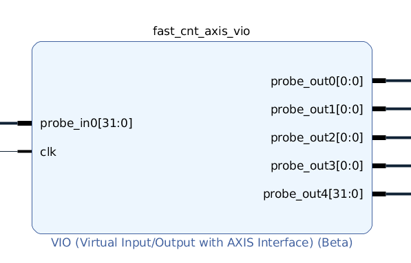

VIO¶
VIO is a customizable core that can monitor and drive internal FPGA signals in real time. VIO inputs and outputs can be monitored and controlled from the ChipScoPy VIO API.
{kind=link}
In the picture above, there is 1 input port and 5 output ports. The input is connected to a bus in the design to monitor. The probe outputs are virtual buttons that connect to design components to control.
Details¶
VIO Inputs¶
Inputs to the VIO are driven by the user design. The input values are a snapshot at any given time of the user design logic. Software is slower to reading values than to the speed of the design, so values may change many times between API port value reading. Activity detectors report changes to the VIO port inputs between software reads.
VIO Input Activity Detectors¶
A VIO core input optionally has additional cells to capture the presence of transitions on the input. Because the design clock is most likely much faster than the sample period of the Analyzer, it is possible for the signal being monitored to transition many times between successive samples. The activity detectors capture this behavior and the results are returned with the port values.
VIO Outputs¶
Outputs from the VIO are driven to the surrounding user design. The output values are driven to 1s and 0s by the ChipScoPy API. Initial output values are set to desired values during IP generation time.
VIO output ports follow a naming convention “probe_out<#>[x:y]” where <#> is an index from 0-1023, and [x:y] is the bit width.
VIO Probes¶
There is a logical mapping between ports of a VIO core and elements in the user’s design. This port mapping is recorded in the LTX file in the Vivado design flow.
When an LTX file is read, the HDL net/bus name mapping is available. This enables reading and writing probe values in the context of the HDL design.
For example, if an HDL design mapped “counter[31:0]” to a VIO input port 0, read_probes("counter") returns the
value of the counter attached to that VIO input. This is equivalent to read_ports("probe0_in"), but allows
you to identify nets in the context of the source HDL design.
VIO API Reference¶
VIO Class¶
-
class
chipscopy.api.vio.VIO(vio_tcf_node, *, ltx=None)[source]¶ This class contains the main API to use the VIO (Virtual Input/Output) debug core. VIO monitors elements of a running design in hardware with probe inputs and drives elements in the design with probe outputs.
This API has methods for querying and controlling VIO ports directly. This is useful for lower level control, or direct VIO control when no LTX file is available.
If an LTX file is available, the higher level read_probes and write_probes methods are available to debug at the higher level HDL context. HDL nets and bus names from Vivado are automatically converted to the correct VIO probe port when reading or writing.
-
clear_activity()[source]¶ Clear any stale activity indicator data. This really just does a dummy read of all probes.
- Returns
Nothing
-
property
is_activity_supported¶ True if this vio core supports activity detection
- Return type
bool
-
property
port_in_count¶ Number of VIO input ports in the debug core. Input ports monitor activity in the design.
- Return type
int
-
property
port_names¶ List of all VIO port names (input and output) for this VIO core.
VIO cores name ports as
probe_in#for input ports, andprobe_out#for output ports. ‘#’ represents the port index and begins at 0.- Return type
List[str]
-
property
port_out_count¶ Number of VIO output ports in debug core. Output ports are virtual buttons.
- Return type
int
-
property
probe_names¶ Returns: List of probe names from the LTX file
- Return type
List[str]
-
property
probes¶ Get probes attached to the VIO core and associated port information.
- Return type
List[VIOProbe]- Returns
List of VIOProbes
-
read_ports(port_names=None)[source]¶ Read VIO port values from hardware. Gets the current values from hardware for selected input_ports and output_ports.
- Parameters
port_names (
Union[str,List[str],None]) – (optional) List of port names (seevio_port_names). The default is all ports.- Returns
dict: (port_name, {‘value’: value, ‘activity’: activity}).
’value’ is always returned as an integer for each port.
’activity’ is only included for vio input ports when the activity detection is turned on. Activity does not exist for vio output ports. Activity is returned as one character per bit of the probe. ‘R’, ‘F’, ‘N’, ‘B’ represent edges - Rising, Falling, None, Both.
port_data returned as a dictionary in the following format:
port_data = { probe_in0: {'value': 3, 'activity': 'RR'}, ... , probe_out0: {'value': 456}, ... }
- Return type
dict
-
read_probe_activity(probe_names=None)[source]¶ Read probe activity values from hardware. Reading activity has the side effect of clearing activity registers in the VIO IP in hardware.
Activity tracking is only available on input ports, and must be enabled when generating the VIO IP.
Activity is returned as a string of characters representing activity for each bit.
'R' = rising edge detected 'F' = falling edge detected 'B' = both edges detected 'N' = no edge detected 'X' = activity not supported on port (ex: vio output port)
- Parameters
probe_names (
Optional[List[str]]) – Optional list of probe names (seevio_probe_names). Empty returns all probe activity.- Returns
dict: {probe_name: activity_string, …}.
- Return type
dict
-
read_probe_values(probe_names=None)[source]¶ Read probe values from hardware. Reading probes has a side effect of clearing activity. If you need both values and activity, call read_probes().
- Parameters
probe_names (
Optional[List[str]]) – Optional list of probe names (seevio_probe_names). Empty returns all probe values.- Returns
dict: {probe_name: value, …}. ‘value’ is always returned as an integer for each port.
- Return type
dict
-
read_probes(probe_names=None)[source]¶ Read probe values from hardware. Gets the current integer and activity values from hardware for selected probes. Output probes to not support activity and will return ‘X’ for all activity values.
- Parameters
probe_names (
Optional[List[str]]) – Optional list of probe names (seevio_probe_names). Empty returns all probe values.- Returns
dict: (probe_name, {‘value’: value, ‘activity’: activity}).
’value’ is always returned as an integer for each port.
’activity’ is only included for vio input probes when the activity detection is turned on. Activity does not exist for vio output probes. Activity is returned as one character per bit of the probe. ‘R’, ‘F’, ‘N’, ‘B’ represent edges - Rising, Falling, None, Both. ‘X’ returned for activity indicates it is not supported on that probe.
port_data = { foo_probe: {'value': 3, 'activity': 'RR'}, ... , bar_probe: {'value': 456}, ... }
- Return type
dict
-
write_ports(port_values)[source]¶ Write values to VIO port outputs in hardware. Port names follow the VIO convention port in and port out naming. See
vio_port_names.- Parameters
port_values (
Dict[str,int]) –dict. key=port_name, value=port_value. port_name is a VIO output port. port_value is a python int value.
write_ports({'probe_out0': 1000, 'probe_out1': 0x100})
- Returns
Nothing
-
write_probes(probe_values=None)[source]¶ Write values to VIO probe outputs in hardware. See
vio_probe_names.- Parameters
probe_values (
Optional[Dict[str,int]]) –dict. key=probe_name, value=probe_value. probe_name is a VIO output probe. probe_value is a python int value.
write_probes({'foo': 1000, 'bar': 0x100})
- Returns
Nothing
-
VIOProbe Class¶
-
class
chipscopy.api.vio.VIOProbe(ltx_probe)[source]¶ VIOProbe represents a single VIO probe connected to a VIO port. A VIO Port may be connected to many probes. Each probe is a slice of the port as shown below.
-------- ----------------- VIO Port ------------------------ -------- msb lsb N-1 47 16 15 0 ----------------------------------------------------- | boo[] | ... | baz[] | bar[31:0] | foo[15:0] | ----------------------------------------------------- ^ ^ | port_bit_ | offset | 16 | | bus_left bus_right _index _index 31 0
Normally the left index is the most significant probe index, and the right index is the least significant. They match the HDL index of what was probed in the design.
-
bus_left_index: int¶ probe_name[bus_left_index::bus_right_index]- When is_bus == True, this is the left index of the probe. When is_bus == False, this unused.
-
bus_right_index: int¶ probe_name[bus_left_index::bus_right_index]- When is_bus == True, this is the right index of the probe. When is_bus == False, this unused.
-
direction: str¶ in or out. IN is a monitor connected to something in the design. Out is a virtual button the VIO drives.
-
is_bus: bool¶ True if this probe is a vector, False if this probe is a scalar.
-
port_bit_offset: int¶ Bit offset into the probe port that indicates where the probe data begins in the port.
-
port_index: int¶ VIO port number of the input or output port.
-
property
port_name¶ Represents the VIO port name in the IP (like probe_in0, probe_out1, etc)
-
probe_name: str¶ Represents the HDL net or bus name. It does not contain the brackets of the bus name [x:y].
-